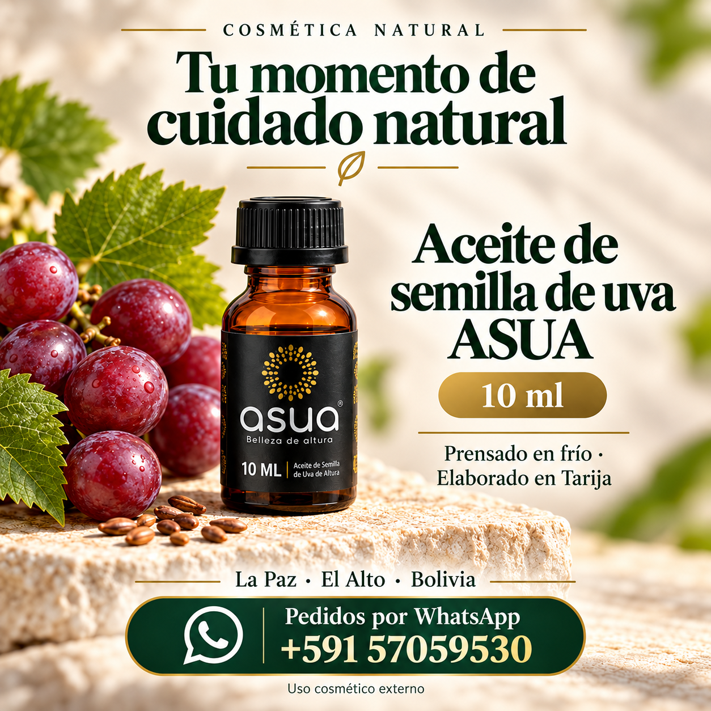

PARA LLEVAR CONTIGOASUA · ACEITE COSMÉTICO
Aceite de semilla de uva
10 ml
Un formato compacto para suavizar la piel, cuidar manos y cutículas o complementar el cuidado de las puntas del cabello.
Bs 50 por frasco
Propiedades y forma de uso ↗